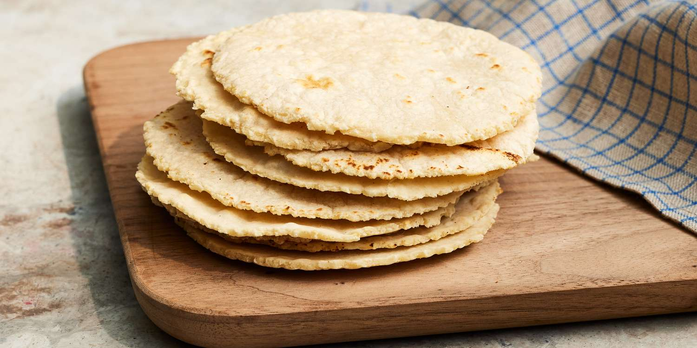

Home
Tortillas

Ingredients
- 45g Masa Harina
- 2g Salt
- 78g Water
Steps
The steps to making fresh corn tortillas is actually quite easy.
- Weigh out and add masa harina into a bowl.
- Add in the salt.
- Slowly add in water as you mix. Knead the dough for 2-3 minutes.
- Evenly portion out 3 tortilla balls from the dough.
- Flatten each ball with a tortilla press and then cook on a griddle.
- Enjoy!